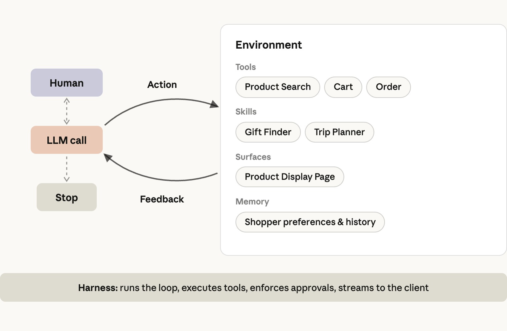
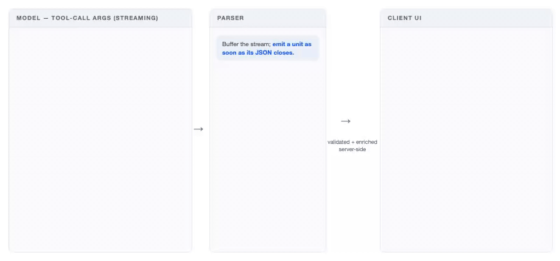
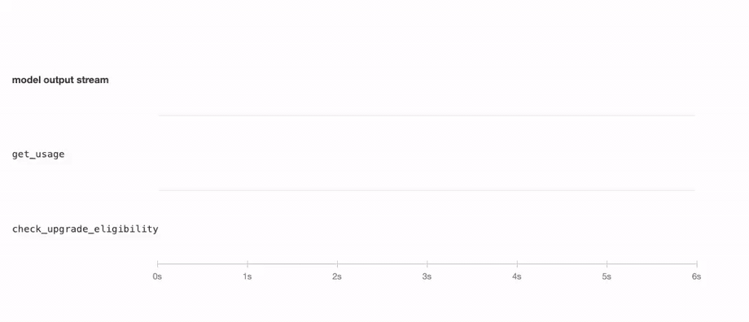
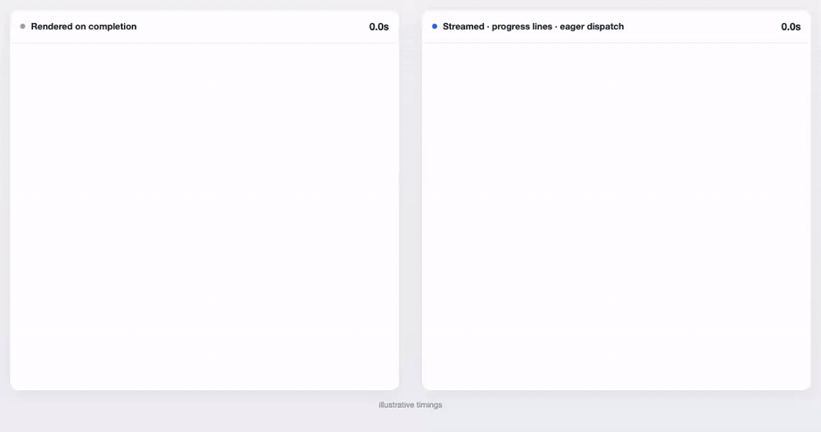
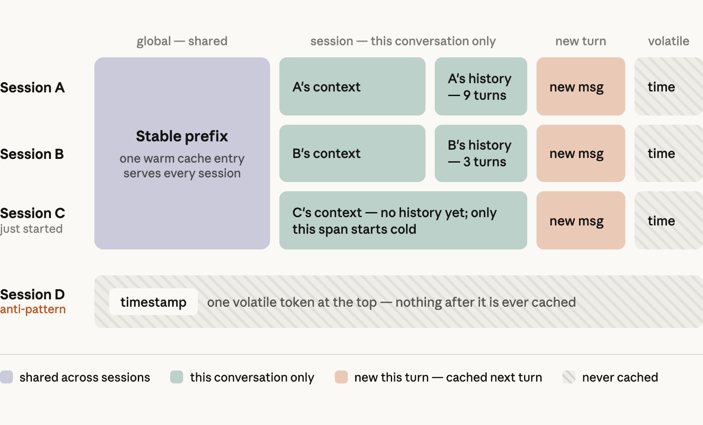
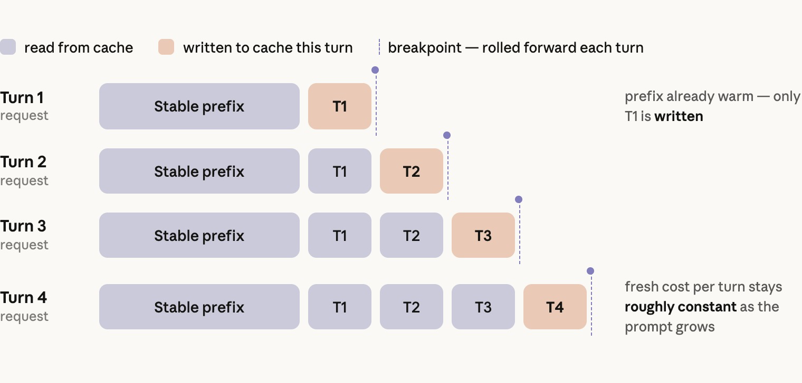
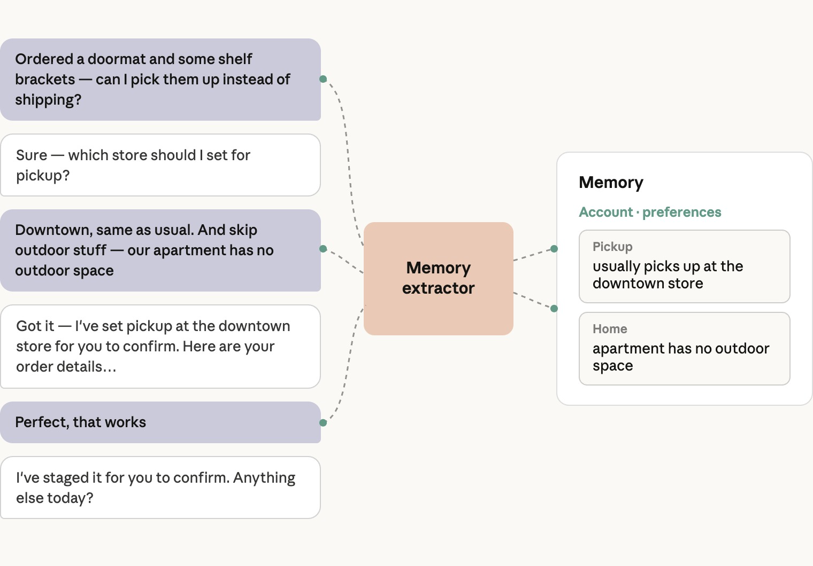
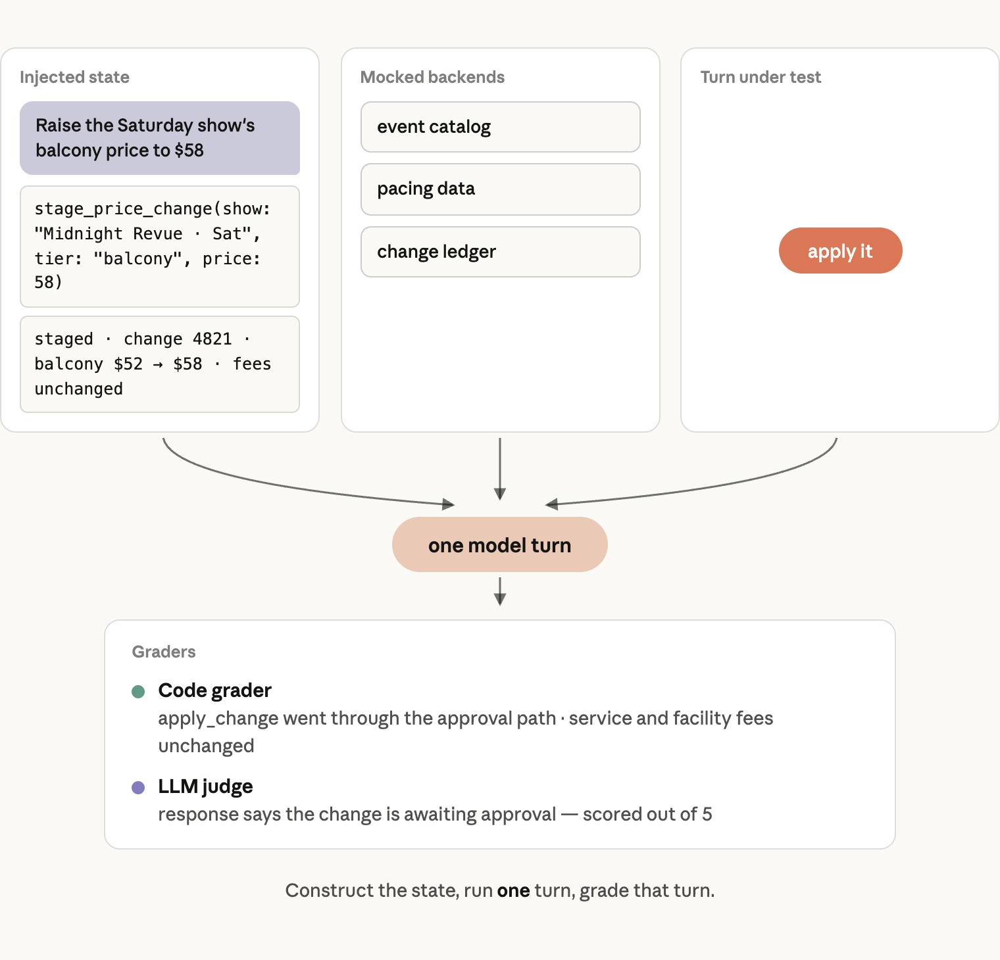

커머스 에이전트는 온라인 카탈로그를 사이에 둔 구매와 판매를 단순하게 만들어 준다. 소비자를 상대로 검색·비교·주문 구성을 돕는 형태도 있고, 기업을 상대로 영업 문의·프로모션·재고를 관리해 주는 형태도 있다. 이 둘의 공통된 핵심은 "표준적인 에이전트 루프 안의 모델"이다. 즉 목표에 대해 추론하고, 컨텍스트를 탐색하고, 도구를 통해 행동을 취하고, 스킬을 통해 절차를 학습하는 구조다.
도메인별로 전용 서브에이전트를 만들고 싶은 유혹이 들지만, 이 접근은 최선이 아닌 것으로 나타났다. 커머스 대화는 여러 의도에 걸쳐 공유되는 컨텍스트를 필요로 한다. "도메인마다 서브에이전트를 두는 방식은 그 접근 권한을 곳곳에 중복시키거나, 작업 중간에 핸드오프를 발생시킨다." 에이전트 스킬은 핸드오프 비용 없이 모듈성을 제공한다. "스킬을 갖춘 단일 에이전트는 모든 것을 하나의 프롬프트에 욱여넣는 설계와 서브에이전트 설계 양쪽 모두를 품질 면에서 꾸준히 앞섰다."
서브에이전트는 범위가 좁고 자기완결적인 작업이거나, 해당 도메인에 이미 전용 에이전트가 존재하는 경우에만 제자리를 찾는다.
자주 필요한 지시는 시스템 프롬프트에 담아 둔다. "대부분의 턴에서 에이전트가 필요로 하는 것은 대체로 시스템 프롬프트에 들어간다." 스킬은 불러오는 데 모델 턴 하나를 소모하므로, 빈도가 낮은 필요를 위해 아껴 둔다. 안전과 직결된 규칙은 언제나 시스템 프롬프트에 둔다.
커머스의 경우, 상품 검색은 프롬프트에 상주시킨다. 검색·발견, 구매 리서치, 고객 응대, 메모리·개인화 같은 기능은 스킬로 다룬다.
기존 시스템 위에 도구를 세운다. "에이전트의 도구는 그 시스템들을 호출해야지 재구현해서는 안 되며, 도구의 경계가 곧 그 로직이 끝나는 지점이다."
도구 결과도 컨텍스트다. 모델이 추론에 필요로 하는 필드만 반환한다. "필요하다면 도구 내부에서 원시 응답의 형태를 다시 잡아 주고, 데이터만으로는 다음 단계가 분명하지 않을 때는 다음 단계를 덧붙여 준다."

커스텀 마크업을 쓰는 대신, UI 컴포넌트 하나하나를 도구로 만든다. "모델은 타입이 지정된 인자와 함께 present_products, present_itinerary, present_plan_comparison 같은 도구를 호출하고, 서버는 이 호출을 검증·보강한 뒤 이벤트를 발행한다."
이렇게 하면 컴포넌트가 대화 재생(replay) 시에도 네이티브 포맷 그대로 유지되고, "에이전트가 화면에 무엇이 떠 있는지에 대한 기록"을 갖게 되어 "첫 번째 호텔" 같은 지시적 표현도 정확히 처리할 수 있다.

레버는 세 가지다. 턴 수를 줄이는 것, 도구를 빠르게 만드는 것, 토큰을 빠르게 만드는 것.
턴 수 줄이기
도구를 빠르게 만들기
토큰을 빠르게 만들기

체감 대기 시간을 줄이는 기법은 두 가지다.

"캐시된 입력 토큰을 읽는 비용은 새로 읽는 것의 10분의 1이다." 커머스 배포 환경은 대체로 "90~99%의 캐시 히트율"로 돌아간다.
요청은 변경 빈도에 따라 세 구간으로 구조화한다.
"우리가 가장 흔히 목격하는 실수는 타임스탬프나 현재 페이지 정보를 시스템 프롬프트 맨 앞에 두는 것이다. 이건 매 요청마다 조용히 캐시를 깨뜨린다."

품질, 그리고 지연시간·비용 예산을 측정한 뒤, 모든 모델과 이펙트(effort) 레벨을 스윕(sweep)한다. "장바구니를 채우는 작업에서 Opus 5가 주는 향상 폭이 Sonnet 대비 비용 차이를 정당화할 때도 있고, 그렇지 않을 때도 있다."
핵심 통찰: "프롬프트는 특정 모델에 맞춰 튜닝되어 있기 때문에, 프롬프트 하나로 돌린 스윕은 다른 모델들의 성능을 실제보다 낮게 보이게 만들 수 있다." 작은 모델은 명시적인 지시가 필요하고, 큰 모델은 작은 모델이 무시했던 지시도 잘 따를 수 있다.
비용은 호출당이 아니라 완료된 작업당으로 측정한다. 더 저렴한 모델이라도 턴 수가 더 많이 필요하다면 결코 더 저렴한 게 아니기 때문이다.
메모리는 모델이 아니라 여러분의 시스템에 속해야 한다. 사실(fact)들은 키·값·카테고리·출처 세션을 가진 타입이 지정된 레코드로, 기존 데이터베이스에 저장한다. "사실이란 작은 타입 레코드다 — shoe_size, default_store, preferred_report_cadence 같은 키, 짧은 값, 카테고리, 그리고 그 사실이 나온 세션으로 구성된다."
메모리 저장: 판매자(merchant) 에이전트의 경우, 계정이 아니라 사람 단위로 메모리를 키잉하되 운영자의 권한 체계는 존중한다.
메모리 기록: 각 턴이 끝난 뒤 비동기로 추출한다. "이건 대화의 지연시간에 아무것도 더하지 않으면서, 사실 회수율(fact recall)을 13% 더 높였다." 별도의 추출기를 두면 도구 호출의 오버헤드가 없고, 사용자·어시스턴트의 텍스트만 읽고 도구 결과는 절대 읽지 않으므로, 상품 목록이나 리뷰에서 잘못된 사실이 섞여 들어가는 일을 막는다.
메모리 읽기: 세 계층을 사용한다 — 항상 컨텍스트에 들어 있는 사실(예: 기본 매장), 현재 요청과 관련해 미리 가져와 둔 사실, 그리고 조회 도구를 통해 접근하는 나머지 모든 사실.

모델은 초안을 만들고, 사람이나 정책이 그것을 적용한다. 어떤 모델 호출도 돈을 직접 움직이지 않는다. "주문, 결제, 환불, 가격 변경, 캠페인 출시는 모두 모델이 아니라 하니스가 통제하는 행동으로 귀결된다."
쓰기(write)는 서버가 발급한 ID만 받아들인다. "하니스는 서버가 모델에 건넨 모든 ID를 세션 단위로 기록해 두며, 쓰기나 렌더링이 받아들이는 키는 오직 그 기록에 있는 것뿐이다."
거래 한도는 반복 요청에도 유지된다. 요청 자체가 아니라 그 결과로 남는 상태에 한도를 건다. "한 세션 안의 병렬 도구 호출이 합쳐져서 한도를 넘기지 못하도록, 세션 단위로 쓰기를 직렬화한다."
제3자 콘텐츠는 살균(sanitize)한다. 상품 목록, 리뷰, 정책 등 신뢰할 수 없는 모든 입력은 살균을 거쳐 펜스(fence)로 감싼다. "프롬프트는 이 계약의 나머지 절반을 담당한다. 펜스로 감싼 텍스트는 보고할 자료일 뿐, 그에 따라 행동할 근거가 아니라는 것이다."

대화가 아니라 스냅샷을 평가한다. 테스트 상태를 직접 구성하고, 사용자 메시지를 덧붙인 뒤, 그 결과를 채점한다. "두 번째 모델이 사용자 역할을 연기하고 심사자(judge) 모델이 대화 전체를 채점하는 시뮬레이티드 유저 평가는, 측정 도구로서는 형편없다."
가혹한 조건에서의 행동을 평가한다. "케이스는 작업 내용뿐 아니라 실패가 발생하는 전제 조건까지 담아야 한다." 길고 지저분하거나 서로 모순되는 이력을 테스트 스위트에 포함시킨다.
서로 다른 평가 유형을 모두 커버한다:
도메인 전문가(SME)와 함께 평가를 작성하고, 실제 사고 사례를 활용한다. "가장 좋은 평가는 실제로 일어난 실패에서 나오며, 사용자 플로우당 50~100개의 평가 케이스가 좋은 출발점이다."

"이 글이 설명하는 내용의 대부분은 사실 모델에 관한 것이 아니다." 도구는 기존 시스템을 호출하고, 스킬은 기존 절차를 인코딩하며, 평가는 제품 요구사항을 담아내고, 하니스는 기존 정책을 강제한다. 더 나은 모델이 나오면, 그것을 도입하는 일은 설정 변경 하나와 평가 스윕 한 번으로 끝난다.
"같은 에이전트가 음성으로도 작동할 수 있고, 사용자가 묻기도 전에 항공권 가격 하락에 선제적으로 대응할 수도 있다." 이 아키텍처는 음성과 선제적(proactive) 행동을 프레젠테이션 레이어의 별도 프로젝트로 지원한다. 언젠가는 제3자 에이전트가 사용자를 대신해 쇼핑을 하게 될 텐데, 그때도 같은 출처 추적, 초안 작성, 승인 규칙이 그대로 적용된다.
레퍼런스 구현: GitHub의 anthropics/commerce-agents